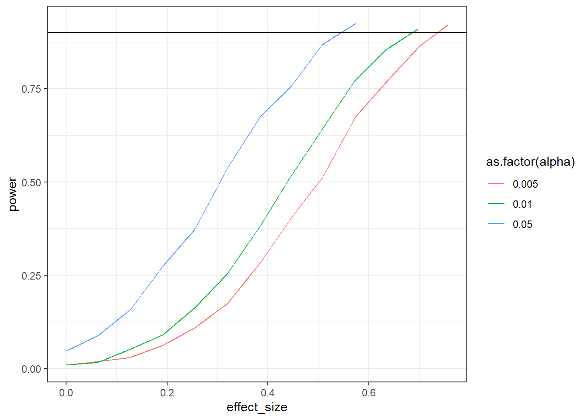

This set of exercises won’t introduce new technical skills. Instead, you’ll apply your simulation skills to different concepts to get a better feeling for the false positive rate, the role of alpha, and how a sensitivity analysis works.
0.1 Exercise
The False Positive Rate is the proportion of false positive findings among all positive (aka signifiant) findings. It’s defined as follows:
\(\phi\) is the proportion of null hypotheses, in general in a field, that are true, \(\alpha\) your false positive error rate, and power is \((1-\beta)\).
Plot how the false positive rate develops as \(\phi\) goes from 0 to 1 for two \(\alpha\) levels (.05 and .01.) and two levels of power (80% and 95%). No need for a simulation here. You can just straight up use the formula above to calculate the false positive rate. For that, it’s probably easiest to create a data frame. Try out the expand.grid command which creates a data frame of all combinations of several variables. For example:
In physics, they use a five sigma rule. That means their alpha is \(3*10^{-7}\) or 1 in 3.5 million. Do the above again, but this time plot “our” 0.05 against five sigma and compare false positive rates.
How does the alpha level influence your power? Simulate two correlated scores. The means of the scores are 4 and 4.2; their SDs are 0.4 and 0.7. Their correlation is 0.65. Simulate power (500 runs) for sample sizes starting at 30 and going to a maximum of 110. Stop whenever you reach 95% power (so use while). Do that for 5 different alpha levels: c(0.005, 0.001, 0.01, 0.05, 0.10). Plot the results. As always, you can use the code below. What’s the influence of the alpha compared to the sample size?
for (analpha in alphas) { n <- ? power <- ?while (power < ? & n <= ?) {for (i in1:runs) { } n <- n +1 }}library(ggplot2)ggplot(outcomes, aes(x = sample_size, y = power, color =as.factor(alpha))) +geom_line() +geom_hline(yintercept =0.95) %>%theme_classic()
library(MASS)means <-c(pre =4, post =4.3)pre_sd <-0.4post_sd <-0.7correlation <-0.65alphas <-c(0.005, 0.001, 0.01, 0.05, 0.10)runs <-500n_max <-110sigma <-matrix(c( pre_sd**2, correlation * pre_sd * post_sd, correlation * pre_sd * post_sd, post_sd**2 ),ncol =2 )outcomes <-data.frame(sample_size =NULL,alpha =NULL,power =NULL )for (analpha in alphas) { n <-30 power <-0while (power <0.95& n <= n_max) { pvalues <-NULLfor (i in1:runs) { d <-as.data.frame(mvrnorm( n, means, sigma ) ) t <-t.test(d$pre, d$post, paired =TRUE) pvalues[i] <- t$p.value } power <-sum(pvalues < analpha) /length(pvalues) outcomes <-rbind( outcomes,data.frame(sample_size = n,alpha = analpha,power = power ) ) n <- n +1 }}ggplot(outcomes, aes(x = sample_size, y = power, color =as.factor(alpha))) +geom_line() +geom_hline(yintercept =0.95) +theme_classic()
Expand to get a tip
For this exercise, you’ll need to loop over different alpha levels. For each alpha level, you run a while command. Inside the while command you run simulations to determine power. Once you reach enough power, the while command will stop and we’ll go to the next alpha level in the first-level loop.
First, we declare our variables.
library(MASS)means <-c(pre = ?, post = ?)pre_sd <- ?post_sd <- ?correlation <- ?alphas <-c(0.005, 0.001, 0.01, 0.05, 0.10)runs <- ?n_max <- ? # what's our maximum sample size# make an outcome data frameoutcomes <-data.frame(sample_size =NULL,alpha =NULL,power =NULL )
Our variables are correlated, so we need to specify a variance-covariance matrix. Thankfully, we only need to do this once because the means, SDs, and the correlation are independent of the alpha level and therefore constant.
Sweet, then we just fill our variables into the structure provided in the exercise instructions.
for (analpha in alphas) { # iterate over the alphas n <-30# inititate sample size and power power <-0while (power < ? & n <= ?) { # we stop either when we reach power OR when we reach the maximum sample size pvalues <-NULL# store our p-values for this alpha for (i in1:runs) { d <-as.data.frame(mvrnorm( ?, ?, ? ) )# conduct paired samples t-test# store p-value in pvalues }# now we calculate and store power for this alpha for all these runs power <- ?# add that power, our sample size, and the alpha to the outcome data frame n <- ? # update our sample size for the next chunk of runs }}
0.3 Exercise
You have a large sample (2,000 people) from a public cohort study. You’re interested in comparing two groups on their intelligence. Your smallest effect effect size of interest is 3 IQ points. You know of Lindley’s paradox where even small p-values are actually evidence for H0 if the test has a lot of power. Therefore, you decide to conduct a compromise analysis in GPower for an independent, one-tailed t-test. You think that type 2 errors in this case are twice as bad as Type I errors. (Tip: IQ scores are standardized with a mean of 100 and an SD of 15–this should help you get a standardized effect size).
Obtain the new alpha from GPower. Then check whether it helps with Lindley’s paradox. Simulate drawing 10,000 samples with exactly your SESOI and that sample size; run a t-test oon this sample. Also do 10,000 samples where there is 0 difference. What proportion of the p-values of the simulation with an effect are below your new alpha? (Aka: Does your power estimate align with GPower’s power output?). Then plot the p-values of both simulations between 0 and alpha. Have you taken care of Lindley’s paradox?
You can use this code (if your data d are in the long format where the variable type indicates whether we have the effect distribution or the null distribution):
set.seed(42)n <-1e3m <-100sd <-15sesoi <-3draws <-1e4alpha <-0.008925552pvalues <-NULLnulls <-NULLfor (i in1:draws) { control <-rnorm(n, m, sd) treatment <-rnorm(n, m + sesoi, sd) pvalues[i] <-t.test(control, treatment, alternative ="less")$p.value control <-rnorm(n, m, sd) treatment <-rnorm(n, m, sd) nulls[i] <-t.test(control, treatment, alternative ="less")$p.value}power <-sum(pvalues < alpha) /length(pvalues)d <-data.frame(pvalue =c(pvalues, nulls),type =rep(c("effect", "no effect"), each = draws))ggplot(d, aes(x = pvalue, color = type)) +geom_density() +xlim(c(0, 0.02)) +ylim(c(0, draws/10)) +geom_vline(xintercept = alpha) +theme_bw()
Expand to get a tip
For this exercise, you’ll we simply need to conduct two t-tests per run: one with a difference and one without a difference. Let’s first declare our variables.
n <- ?m <- ?sd <- ?sesoi <- ?draws <- ?alpha <-# from GPower
Then we run the simulation, for each draw generating two p-values and storing them.
# somewhere to store the outcomespvalues <-NULLnulls <-NULLfor (i in1:?) {# here we have a difference control <-rnorm(?, ?, ?) treatment <-rnorm(?, ?, ?)# run the first test and store the p-value ? <-t.test(control, treatment, alternative ="less")$p.value# then we run a second t-test (without a group difference) and store the p-value control <-rnorm(n, m, sd) treatment <-rnorm(n, ?, sd)# store it nulls[i] <-t.test(control, treatment, alternative ="less")$p.value}
Now we have everything we need. First, we can calculate power like we always do with sum on pvalues. Then let’s store both types of p-values (effect and no effect) in a data frame. Afterwards, we can use the code from the instructions for plotting.
d <-data.frame(pvalue =c(pvalues, nulls),type =rep(c("effect", "no effect"), each = draws))
0.4 Exercise
For your master thesis, you ran a study where you conducted a paired-samples t-test. At the time, you didn’t know about power analysis. Now as you write the paper up for publication, you state that you didn’t conduct a power analysis, but you want to at least report the sensitivity of the test. Your sample size was 27 and you conducted a two-tailed test. Your alpha was 0.05. Simulate the sensitivity of your study (1,000 runs) for standardized effects ranging from 0 to 1 for 95% power. Verify with GPower. (Tip: Remember that the test is just on the difference of the two scores, so you can directly draw the difference. So rnorm(n, difference_score, sd), then t.test(differences, mu = 0)).
The trick here is to change the way we think about simulations. At this point, we always iterated over sample sizes. But this time, sample size is fixed. So we need to iterate over effect sizes, run a t-test with the fixed sample size, and store the power for this effect size. We get all effect sizes (range 0 to 1 SD) with the seq command.
# declare our variables and get all effect sizesn <- ?effects <-seq(?, ?, 0.01)draws <- ?# somewhere to store our resultsoutcomes <-data.frame(effect_size =NULL,power =NULL )# iterate over each effectfor (aneffect in effects) {# somewhere to store p-values for this effect size pvalues <-NULL# now do a number of draws for this effect size to get its powerfor (i in1:draws) {# directly on the difference score differences <-rnorm(n, ?) t <-t.test(differences, mu =0) pvalues[?] <- t$p.value }# then get power for this effect size like we always do outcomes <-rbind( outcomes,data.frame(effect_size = ?,power =sum(? <0.05) / ? ) )}
Run a sensitivity analysis on a paired samples t-test (one-tailed). You had 47 participants; the means were 56 and 60; the SDs were 16 and 13; the correlation between the measures was 0.4. Get sensitivity for three different alpha levels: c(0.005, 0.01, 0.05). As for effect sizes: Increase the effect size by 1 (on the raw scale) until you have 90% power (so use while). For each combination, do 1,000 simulations. Plot the results with ggplot like you did earlier.
ggplot(outcomes, aes(x = effect_size, y = power, color =as.factor(alpha))) +geom_line() +geom_hline(yintercept =0.9) +theme_bw()
You could go about this with the following structure:
for (analpha in alphas) {while (power <0.90) {for (i in1:runs) { } }}
n <-32sd_control <-16sd_treatment <-13correlation <-0.4alphas <-c(0.005, 0.01, 0.05)runs <-1e3library(MASS)outcomes <-data.frame(effect_size =NULL,alpha =NULL,power =NULL )sigma <-matrix(c( sd_control**2, correlation * sd_control * sd_treatment, correlation * sd_control * sd_treatment, sd_treatment**2 ),ncol =2 )for (analpha in alphas) { effect_size <-0 power <-0while (power <0.90) { pvalues <-NULL means <-c(control =56, treatment =56+ effect_size)for (i in1:runs) { d <-as.data.frame(mvrnorm( n, means, sigma ) ) t <-t.test(d$control, d$treatment, paired =TRUE, alternative ="less") pvalues[i] <- t$p.value } power <-sum(pvalues < analpha) /length(pvalues) outcomes <-rbind( outcomes,data.frame(effect_size = effect_size,alpha = analpha,power = power ) ) effect_size <- effect_size +1 }}ggplot(outcomes, aes(x = effect_size, y = power, color =as.factor(alpha))) +geom_line() +geom_hline(yintercept =0.9) +theme_bw()
Expand to get a tip
This one can be tricky at first sight. Let’s first declare our variables.
n <- ?sd_control <- ? # SD for control groupsd_treatment <- ? # SD for treatment groupcorrelation <- ? # correlation between the two scoresalphas <-c(0.005, 0.01, 0.05) # our alphas we iterate overruns <- ? # number of draws# somewhere to store the resultsoutcomes <-data.frame(effect_size =NULL,alpha =NULL,power =NULL)
Our variables are correlated, so we need to specify a variance-covariance matrix. The question is: When? Because the SDs are stable, we can do that right before the actual simulations. Then we iterate over each alpha level, followed by the power calculation.
# sigma <-matrix(c( sd_control**2, correlation * sd_control * sd_treatment, correlation * sd_control * sd_treatment, sd_treatment**2 ),ncol =2 )for (analpha in alphas) { # iterate over each alpha level# inititate zero effect size and power before we do simulations effect_size <-0 power <-0# here is our while statement: we'll keep looking at power until we reach 90% for this alpha levelwhile (power <0.90) {# store p-values pvalues <-NULL# here is where we need to create the means (aka set the effect size) means <-c(control = ?, treatment = ? + ?)# then we need to calculate power for this alpha level and effect sizefor (i in1:?) {# create correlated scores d <-as.data.frame(mvrnorm( ?, ?, ? ) )# run t-test t <-t.test(d$control, d$treatment, paired =TRUE, alternative ="less")# store pvalues[i] <- t$p.value }# after the draws, we calculate power like we always do, except this time the alpha will change power <-sum(pvalues < ?) /length(pvalues)# store it all outcomes <-rbind( outcomes,data.frame(effect_size = effect_size,alpha = ?,power = power ) )# now we need to increase the effect size in case we didn't reach 90% power in the while statement above effect_size <- effect_size +1 }}
0.6 Exercise
Do the above again, but this time on the standardized scale. Verify your results with GPower. With this exercise, you can’t plot the raw effect size anymore; you’ll you need to plot the standardized one. However, remember the formula for Cohe’s \(d\) for correlated samples?
\(Cohen's \ d = \frac{M_{diff}-\mu_o}{SD_{diff}}\)
The standardized effect in this simulation will depend on the SD of the difference–and SDs will vary for each simulation. Therefore, you need to calculate the empirical Cohen’s \(d\) (i.e., calculate it with the formula above) for each run, store it, and then take the mean of all \(d\)s per combination. Ultimately, you only need to add a couple of lines (calculating and storing Cohen’s \(d\)) to the code from the exercise above.
set.seed(42)n <-32sd_control <-16sd_treatment <-13correlation <-0.4alphas <-c(0.005, 0.01, 0.05)runs <-1e3library(MASS)outcomes <-data.frame(effect_size =NULL,alpha =NULL,power =NULL )sigma <-matrix(c( sd_control**2, correlation * sd_control * sd_treatment, correlation * sd_control * sd_treatment, sd_treatment**2 ),ncol =2 )for (analpha in alphas) { effect_size <-0 power <-0while (power <0.90) { pvalues <-NULL ds <-NULL means <-c(control =56, treatment =56+ effect_size)for (i in1:runs) { d <-as.data.frame(mvrnorm( n, means, sigma ) ) t <-t.test(d$control, d$treatment, paired =TRUE, alternative ="less") pvalues[i] <- t$p.value ds[i] <- (effect_size -0) /sd(d$control-d$treatment) } power <-sum(pvalues < analpha) /length(pvalues) outcomes <-rbind( outcomes,data.frame(effect_size =mean(ds),alpha = analpha,power = power ) ) effect_size <- effect_size +1 }}ggplot(outcomes, aes(x = effect_size, y = power, color =as.factor(alpha))) +geom_line() +geom_hline(yintercept =0.9) +theme_bw()

Expand to get a tip
This exercise just comes down to you calculating Cohen’s \(d\) for each run. So in the code from the previous exercise (somewhere in a loop; you need to find out yourself where), you add:
Note, you could also do the above by just sampling from a difference score, like we did earlier. But I wanted you to think about, once more, the differences between raw and standardized effect sizes.